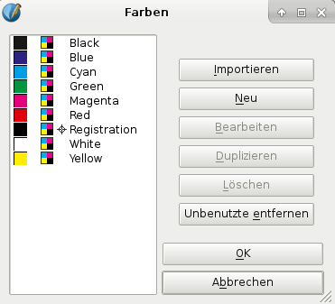
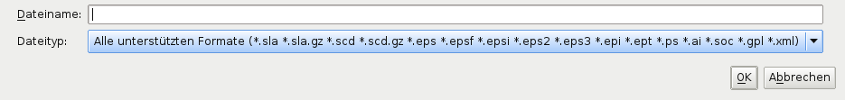

This is a brief introduction and orientation to the Colors dialog, which you activate by selecting Edit > Colors from the menu. Note that this has two modes. The one you may already be familiar with is its use when you already have a document open, and this will be discussed in this section. When you create and save a new document, all the colors that are availabe in the dialog Edit > Colors will be stored in that document. This is an important detail, because any changes to a color palette will only affect the current document.
The other mode for Edit > Colors is when you have no document open. In that situation, you can change your default palette or create a new one. The selection or creation of a new default palette will be described in Managing Color Sets.
If you choose Edit > Colors from the menu for the first time with a document open, Scribus will bring up the following dialog:
|  | On the left side of this dialog you see the list of colors in the selected default color set, which is the palette “Scribus Basic”. The list view contains a preview of every color, a color model indicator, indicators for special colors (spot, registration), and finally the name of the color. If color management is active, you may also see a warning sign between the color preview and the color model icon, indicating that a color is out of gamut. On the right side of the dialog you see various editing options for your color palette, starting with the Import button at the top. Clicking on it brings up a file dialog, where you can select various sources for colors. These sources can either be existing Scribus files or color palettes in one of the following formats (see the file extensions below): Encapsulated PostScript (EPS), PostScript (PS), Adobe Illustrator (AI), OpenDocument Color Palettes (SOC) or GIMP Color Palettes (GPL). Note that importing a color palette does not replace the existing colors. Instead, the colors will be added to the existing palette. |
|  | |
Now that we have had this brief introduction, we can now move on to editing and adding colors (and then maybe editing some more) to our color palette. | |